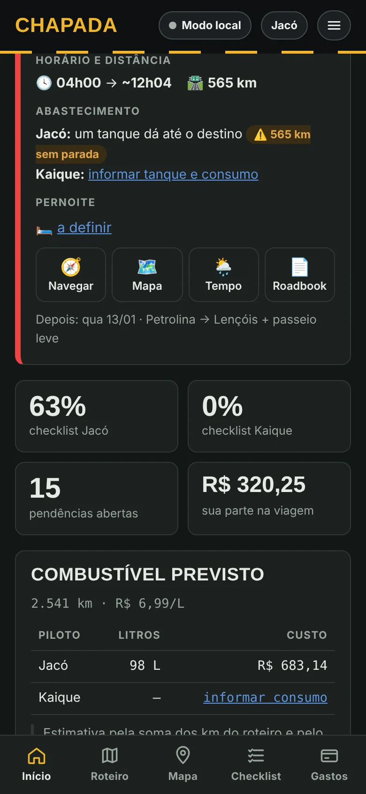
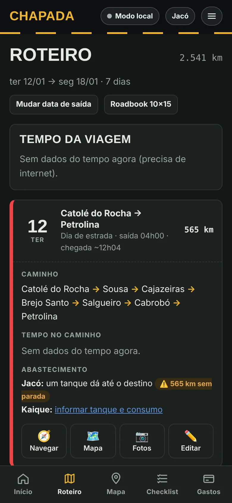
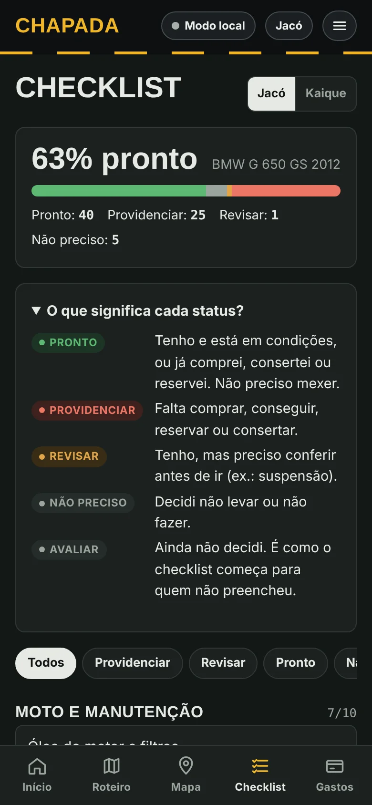
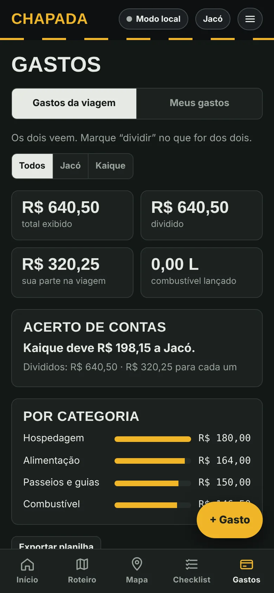
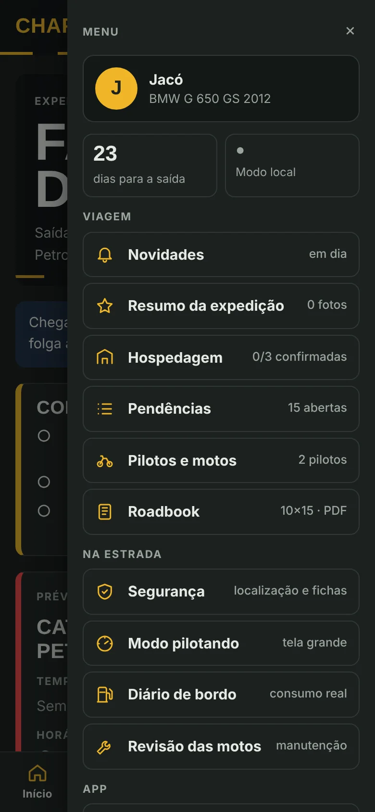

Início
Contagem regressiva, folga até o fim das férias e o que falta no perfil de cada piloto.
PWA de viagem de moto · v1.15
Planejamento e acompanhamento de uma viagem de moto de Catolé do Rocha, PB, até a Chapada Diamantina, BA. Dois pilotos, sete dias, cada um no próprio celular, com tudo sincronizado quando o sinal volta.
O app é de uso dos pilotos, com login. Os prints mostram o modo local, com gastos de exemplo.
A viagem
Começou como planejamento numa conversa e virou um app para seguir na estrada. O primeiro dia já sai pronto, cidade por cidade:
Por dentro
Tema noturno, que é o que os pilotos usam na estrada. O app também tem tema de dia e um modo automático.
Contagem regressiva, folga até o fim das férias e o que falta no perfil de cada piloto.

Saída e chegada estimada, onde abastecer de acordo com o tanque de cada moto, pernoite e indicadores do grupo.

Cada dia com caminho, km, horário e circuito. Dá para trocar a data de saída, inserir ou remover dias.

Um por piloto, com status Pronto, Providenciar, Revisar, Não preciso e Avaliar.

Gastos da viagem divididos entre os dois, com acerto de contas automático e total por categoria.

Hospedagem, pendências, roadbook, segurança, modo pilotando, diário de bordo e revisão das motos.
Na estrada
Letras grandes para olhar numa parada: próxima cidade, km até o destino, hora de chegada e onde abastecer.
Um toque abre o WhatsApp com a mensagem e o link da localização para a família.
Cada abastecida com hodômetro, litros e preço. Calcula o consumo real e ajusta a autonomia.
Pins por circuito e tipo de lugar, com rota pela estrada e km de cada circuito.
Tudo funciona offline. Quando a internet volta, os dois celulares sincronizam.
O roteiro é editado pelos dois. Gastos de preparação e dados pessoais ficam com cada um.
Créditos
| Recurso | Para quê | Licença |
|---|---|---|
| Firebase | Login e sincronização | Termos do Firebase |
| Leaflet | Mapa | BSD-2 |
| OpenStreetMap | Dados e mapa padrão | ODbL |
| OpenTopoMap | Mapa de relevo | CC-BY-SA 3.0 |
| OSRM | Rotas pela estrada | BSD-2 |
| Nominatim | Nome da cidade pela posição | ODbL |
| Open-Meteo | Previsão do tempo | CC BY 4.0 |
| GitHub Pages | Hospedagem | Termos do GitHub |
| Google Fonts | Big Shoulders Display, Public Sans, JetBrains Mono | SIL OFL 1.1 |